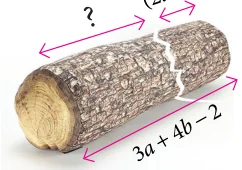
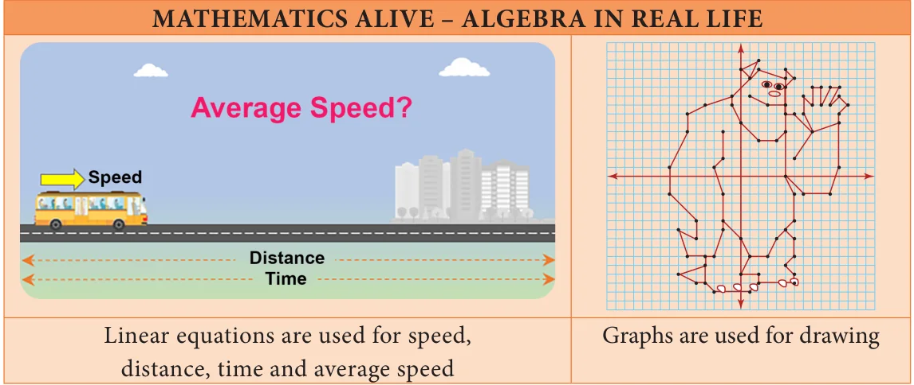

Recap
In our earlier classes, we have learnt about constants, variables, like terms, unlike terms, co-efficients, numerical and algebraic expressions. Later, we have done some basic operations like addition and subtraction on algebraic expressions. Now, we shall recollect them and extend the learning.
Further, we are going to learn about multiplication and division of algebraic expressions and algebraic identities.
Answer the following questions :
- 1.Write the number of terms in the following expressions
- (i)\(x + y + z -\) xyz (ii) m n c
- (iii)\(a b c -\) ab \(c + a\) bc + 3abc (iv) \(8x - 4xy + 7xy\)
- 2.Identify the numerical co-efficient of each term in the following expressions.
- (i)\(2x - 5xy + 6y + 7x - 10y + 9\) (ii) \(\frac{x2y}{35} + -\) xy \(+ 7\)
- 3.Pick out the like terms from the following:
_{2} _{2} _{2} _{2} _{2} Like Terms
x , 3y, 3a b , 4x, x y, 9p ,
\(- 3y\), 4ba , 9ab, 7q, 8p, \(- 25x\) terms along with their
\(- _{5}_{x}^{2}\), _{2}_{x}, \(_{9}_{x}^{2}_{y}\), \(- _{9}_{p}^{2}\), \(_{qp}^{2}\), _{2}_{xy}2 respective exponents must be same
_{2} _{2} _{2} _{2} _{2}, Examples : x ,4x
\(\frac{2}{3} a^{2}b^{2}\), \(- 5a^{2}b^{2}\)
\(- 10p\) , q, 3y x, p, \(- x\) , a b
- ab, a b, 2ba, m n , 5m n 2m, \(- 7m\)
- 4.Add : 2x, 6y, 9x, \(- 2y\)
- 5.Simplify : \((5x y - 3x y +\) xy \(+ 7)+ (2xy + x y - 5+ 2x y\) )
- 6.The sides of a triangle are \(2x - 5y + 9\), \(3y + 6x - 7\) and \(- 4x + y +10\) . Find the perimeter
of the triangle .
- 7.Subtract \(- 2mn\) from 6mn.

- 8.Subtract \(6a - 5ab + 3b\) from \(4a - 3ab + b\) .
- 9.The length of a log is \(3a + 4b - 2\) and a piece \((2a -\) b) is removed
from it. What is the length of the remaining log?
- 10.A tin had x litres of oil. Another tin had \((3x + 6x - 5)\) litres of oil.
The shopkeeper added (x+7) litres more to the second tin. Later, he sold (x +6) litres of oil from the second tin. How much oil was left in the second tin?
